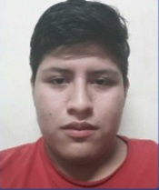

Unidad 2
Practica 1
Practica 2
Practica 3
Practica 4
Practica 5
Practica 6
Practica 7
Practica 8
Mi CV

Dirección
Datos
Datos personales
Nombre completo:
Yosua Alain Trujillo Camarillo
Fecha de nacimiento:
20/08/2001
Lugar de nacimiento:
Córdoba, Veracruz
Fromación académica
2020-2024 :
Tecnológico Nacional de México Instituto Tecnológico de Orizaba
2017-2020:
C.B.T.Is No.47
2014-2017:
E.S.T.I No.148
2007-2014:
Escuela Priaria Josefa Ortiz de Dominguez
Experiecia laboral
2020-2024:
Ingenieria en sistemas